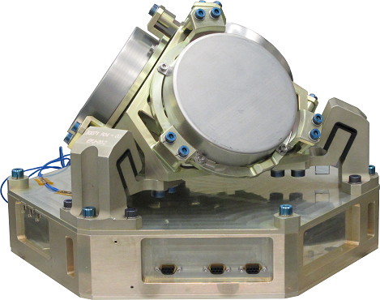

CMG - Control Moment Gyroscope

Illustration of the CMG 15-45S actuator (image credit: EADS Astrium SAS, CNES)
Characteristics of the CMG 15-45S (for S/C in the 1000 kg class)
Output torque | 45 Nm |
Angular momentum | 15 Nms |
Data bus interface | MIL-STD-1553 (or RS-422) |
CMG mechanism mass; volume | 15.7 kg; diameter = 270 mm, height = 350 mm |
CMG mechanism footprint | 200 mm diameter |
Electronics mass (1 box for 4 CMGs); volume | 2.7 kg per channel; 310 mm x 300 mm x 150 mm |
Power use per CMG (including electronics) | 25 W at max speed (@15 Nms) |
Input bus voltage range | 22-37 V |
Stiffness | 120 Hz |